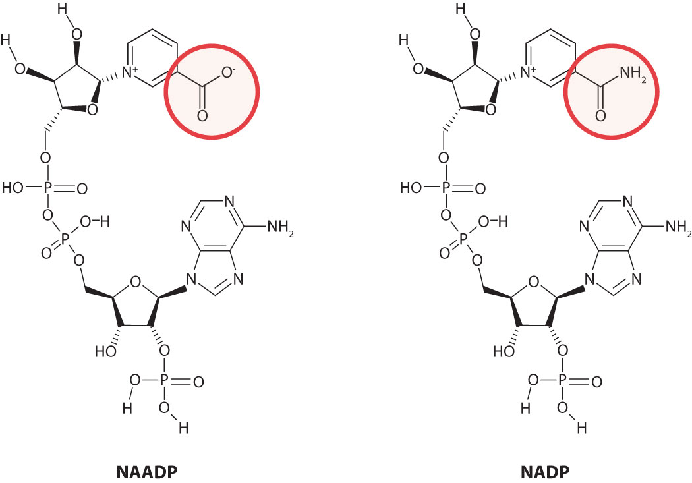
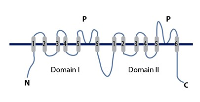

Investigating NAADP-induced Activation
of TPC2 Channel
Tianyi Shi
Background
NAADP vs NADP
Nicotinic acid adenine dinucleotide phosphate (NAADP)
Role of NAADP
- Potent Ca2+-mobilizing second messenger
- Uniquely releases Ca2+ from acidic endolysosomal organelles
- "Affinity purification & quantitative proteomics identified LSM12, a Sm-like protein, complexed with NAADP, TPC1, and TPC2. Lsm12 is essential and immediately participates in NAADP-evoked TPC activation and Ca2+ mobilization from acidic stores." (Zhang et al. 2021)
About TPC2
- Originally discovered to be involved releasing Ca2+ from acidic organelles (Brailoiu 2010)
- Later discovered as a PI(3,5)P2-activated Na+ channel (Wang 2012)
- Controversy about its conductivity -- possibly its conductivity changes depending on its binding partner?
Investigating LSM12-NAADP binding
- LSM12 directly binds to NAADP via its N-terminal LSM domain. (Zhang et. al 2021)
Method
- Generate stable conformations of LSM12 by MD
- Dock NAADP to LSM12 (LSM domain) using PLANTS (~1000 conformations of NAADP per LSM12 conformation)
- Use Amber GBSA/PBSA scoring to narrow down candidates
- Look for stable NAADP-LSM12 conformations after MD simulations (GBSA/PBSA rescoring)
Method
- Generate stable conformations of LSM12 by MD
- Dock NAADP to LSM12 (LSM domain) using PLANTS (~1000 conformations of NAADP per LSM12 conformation)
- Use Amber GBSA/PBSA scoring to narrow down candidates
- Look for stable NAADP-LSM12 conformations after MD simulations (GBSA/PBSA rescoring)
- Some conformations seem to be stable according to the RMSD
- All of them are unlikely to be the actual binding conformation due to the lack of interactions and importantly the lack of involvement of the carboxyl group in binding.
LSM12-TPC2 Binding
- Used HADDOCK 2.4 server for docking
- Final goal is to see how NAADP affects LSM12-TPC2 binding and how this affects the conformation of TPC2 that leads to TPC2 activation.
AlphaFold prediction of TPC2-LSM12 binding
Default configuration
I1129 12:34:23.556982 140672356320192 run_docker.py:222] Traceback (most recent call last):
I1129 12:34:23.557021 140672356320192 run_docker.py:222] File "/app/alphafold/run_alphafold.py", line 427, in
I1129 12:34:23.557060 140672356320192 run_docker.py:222] app.run(main)
I1129 12:34:23.557099 140672356320192 run_docker.py:222] File "/opt/conda/lib/python3.7/site-packages/absl/app.py", line 312, in run
I1129 12:34:23.557138 140672356320192 run_docker.py:222] _run_main(main, args)
I1129 12:34:23.557177 140672356320192 run_docker.py:222] File "/opt/conda/lib/python3.7/site-packages/absl/app.py", line 258, in _run_main
I1129 12:34:23.557217 140672356320192 run_docker.py:222] sys.exit(main(argv))
I1129 12:34:23.557255 140672356320192 run_docker.py:222] File "/app/alphafold/run_alphafold.py", line 412, in main
I1129 12:34:23.557294 140672356320192 run_docker.py:222] is_prokaryote=is_prokaryote)
I1129 12:34:23.557332 140672356320192 run_docker.py:222] File "/app/alphafold/run_alphafold.py", line 194, in predict_structure
I1129 12:34:23.557371 140672356320192 run_docker.py:222] random_seed=model_random_seed)
I1129 12:34:23.557409 140672356320192 run_docker.py:222] File "/app/alphafold/alphafold/model/model.py", line 167, in predict
I1129 12:34:23.557448 140672356320192 run_docker.py:222] result = self.apply(self.params, jax.random.PRNGKey(random_seed), feat)
I1129 12:34:23.557487 140672356320192 run_docker.py:222] File "/opt/conda/lib/python3.7/site-packages/jax/interpreters/xla.py", line 474, in backend_compile
I1129 12:34:23.557533 140672356320192 run_docker.py:222] return backend.compile(built_c, compile_options=options)
I1129 12:34:23.557573 140672356320192 run_docker.py:222] RuntimeError: Resource exhausted: Out of memory while trying to allocate 907542528 bytes.
Running out of memory—but 60GB of Swap is not being used
XLA_PYTHON_CLIENT_MEM_FRACTION set to 9.0
I1129 13:37:13.874876 140406254453696 run_docker.py:222] RuntimeError: Internal: Failed to launch CUDA kernel: CUDA_ERROR_ILLEGAL_ADDRESS: an illegal memory access was encountered
I1129 13:37:15.928295 140406254453696 run_docker.py:222] 2021-11-29 13:37:15.927005: E external/org_tensorflow/tensorflow/stream_executor/cuda/cuda_driver.cc:1039] could not synchronize on CUDA context: CUDA_ERROR_ILLEGAL_ADDRESS: an illegal memory access was encountered :: *** Begin stack trace ***
I1129 13:37:15.929443 140406254453696 run_docker.py:222] _PyModule_ClearDict
I1129 13:37:15.929484 140406254453696 run_docker.py:222] PyImport_Cleanup
I1129 13:37:15.929541 140406254453696 run_docker.py:222] Py_FinalizeEx
I1129 13:37:15.929590 140406254453696 run_docker.py:222]
I1129 13:37:15.929629 140406254453696 run_docker.py:222] _Py_UnixMain
I1129 13:37:15.929668 140406254453696 run_docker.py:222] __libc_start_main
I1129 13:37:15.929706 140406254453696 run_docker.py:222]
I1129 13:37:15.929745 140406254453696 run_docker.py:222] *** End stack trace ***
I1129 13:37:15.929791 140406254453696 run_docker.py:222]
I1129 13:37:15.929831 140406254453696 run_docker.py:222] 2021-11-29 13:37:15.927398: F external/org_tensorflow/tensorflow/compiler/xla/service/gpu/gpu_executable.cc:99] Check failed: pair.first->SynchronizeAllActivity()
I1129 13:37:15.929885 140406254453696 run_docker.py:222] Fatal Python error: Aborted
I1129 13:37:15.929925 140406254453696 run_docker.py:222]
I1129 13:37:15.929964 140406254453696 run_docker.py:222] Current thread 0x00007fe82c0c7240 (most recent call first):
I1129 13:37:16.766510 140406254453696 run_docker.py:222] /app/run_alphafold.sh: line 3: 8 Aborted (core dumped) python /app/alphafold/run_alphafold.py "$@"Illegal memory access—but Swap is still largely free
--use_gpu=False
I1130 04:27:34.962459 140054669824960 run_docker.py:222] I1130 04:27:34.899969 140054317711936 model.py:176] Output shape was {'distogram': {'bin_edges': (63,), 'logits': (1699, 1699, 64)}, 'experimentally_resolved': {'logits': (1699, 37)}, 'masked_msa': {'logits': (252, 1699, 22)}, 'predicted_aligned_error': (1699, 1699), 'predicted_lddt': {'logits': (1699, 50)}, 'structure_module': {'final_atom_mask': (1699, 37), 'final_atom_positions': (1699, 37, 3)}, 'plddt': (1699,), 'aligned_confidence_probs': (1699, 1699, 64), 'max_predicted_aligned_error': (), 'ptm': (), 'iptm': (), 'ranking_confidence': ()}
I1130 04:27:34.976770 140054669824960 run_docker.py:222] I1130 04:27:34.914953 140054317711936 run_alphafold.py:199] Total JAX model model_1_multimer on inp predict time (includes compilation time, see --benchmark): 49808.6s
I1130 04:28:20.359441 140054669824960 run_docker.py:222] I1130 04:28:20.358081 140054317711936 amber_minimize.py:176] alterations info: {'nonstandard_residues': [], 'removed_heterogens': set(), 'missing_residues': {}, 'missing_heavy_atoms': {}, 'missing_terminals': {: ['OXT'], : ['OXT'], : ['OXT']}, 'Se_in_MET': [], 'removed_chains': {0: []}}
I1130 04:28:23.701890 140054669824960 run_docker.py:222] I1130 04:28:23.700671 140054317711936 amber_minimize.py:405] Minimizing protein, attempt 1 of 100.
I1130 04:28:26.547591 140054669824960 run_docker.py:222] I1130 04:28:26.547052 140054317711936 amber_minimize.py:69] Restraining 13557 / 27290 particles.
I1130 05:41:09.606954 140054669824960 run_docker.py:222] I1130 05:41:09.603089 140054317711936 amber_minimize.py:176] alterations info: {'nonstandard_residues': [], 'removed_heterogens': set(), 'missing_residues': {}, 'missing_heavy_atoms': {}, 'missing_terminals': {}, 'Se_in_MET': [], 'removed_chains': {0: []}}
I1130 05:41:32.795248 140054669824960 run_docker.py:222] I1130 05:41:32.777013 140054317711936 amber_minimize.py:493] Iteration completed: Einit 48714377461.69 Efinal -26853.00 Time 4339.66 s num residue violations 11 num residue exclusions 0
I1130 05:41:32.814619 140054669824960 run_docker.py:222] I1130 05:41:32.814083 140054317711936 amber_minimize.py:405] Minimizing protein, attempt 1 of 100.
I1130 05:41:48.395275 140054669824960 run_docker.py:222] I1130 05:41:48.393010 140054317711936 amber_minimize.py:69] Restraining 13464 / 27290 particles.
I1130 06:25:48.433250 140054669824960 run_docker.py:222] I1130 06:25:48.432546 140054317711936 amber_minimize.py:176] alterations info: {'nonstandard_residues': [], 'removed_heterogens': set(), 'missing_residues': {}, 'missing_heavy_atoms': {}, 'missing_terminals': {}, 'Se_in_MET': [], 'removed_chains': {0: []}}
I1130 06:26:07.985644 140054669824960 run_docker.py:222] I1130 06:26:07.965238 140054317711936 amber_minimize.py:493] Iteration completed: Einit 59680.38 Efinal -36604.03 Time 2629.94 s num residue violations 8 num residue exclusions 11
I1130 06:26:07.990069 140054669824960 run_docker.py:222] I1130 06:26:07.989681 140054317711936 amber_minimize.py:405] Minimizing protein, attempt 1 of 100.
I1130 06:26:21.955765 140054669824960 run_docker.py:222] I1130 06:26:21.954967 140054317711936 amber_minimize.py:69] Restraining 13455 / 27290 particles.
I1130 07:13:51.180536 140054669824960 run_docker.py:222] I1130 07:13:51.179791 140054317711936 amber_minimize.py:176] alterations info: {'nonstandard_residues': [], 'removed_heterogens': set(), 'missing_residues': {}, 'missing_heavy_atoms': {}, 'missing_terminals': {}, 'Se_in_MET': [], 'removed_chains': {0: []}}
I1130 07:14:10.804064 140054669824960 run_docker.py:222] I1130 07:14:10.783630 140054317711936 amber_minimize.py:493] Iteration completed: Einit 32002.39 Efinal -38561.47 Time 2837.00 s num residue violations 6 num residue exclusions 12
I1130 07:14:49.059859 140054669824960 run_docker.py:222] I1130 07:14:49.058366 140054317711936 amber_minimize.py:176] alterations info: {'nonstandard_residues': [], 'removed_heterogens': set(), 'missing_residues': {}, 'missing_heavy_atoms': {}, 'missing_terminals': {: ['OXT'], : ['OXT'], : ['OXT']}, 'Se_in_MET': [], 'removed_chains': {0: []}}
I1130 07:14:54.345383 140054669824960 run_docker.py:222] I1130 07:14:54.344920 140054317711936 run_alphafold.py:185] Running model model_2_multimer on inp
I1130 07:14:54.347673 140054669824960 run_docker.py:222] I1130 07:14:54.346495 140054317711936 model.py:166] Running predict with shape(feat) = {'aatype': (1699,), 'residue_index': (1699,), 'seq_length': (), 'msa': (2585, 1699), 'num_alignments': (), 'template_aatype': (4, 1699), 'template_all_atom_mask': (4, 1699, 37), 'template_all_atom_positions': (4, 1699, 37, 3), 'asym_id': (1699,), 'sym_id': (1699,), 'entity_id': (1699,), 'deletion_matrix': (2585, 1699), 'deletion_mean': (1699,), 'all_atom_mask': (1699, 37), 'all_atom_positions': (1699, 37, 3), 'assembly_num_chains': (), 'entity_mask': (1699,), 'num_templates': (), 'cluster_bias_mask': (2585,), 'bert_mask': (2585, 1699), 'seq_mask': (1699,), 'msa_mask': (2585, 1699)}
I1130 07:18:02.747070 140054669824960 run_docker.py:222] 2021-11-30 07:18:02.742541: E external/org_tensorflow/tensorflow/compiler/xla/service/slow_operation_alarm.cc:55]
I1130 07:18:02.747303 140054669824960 run_docker.py:222] ********************************
I1130 07:18:02.747375 140054669824960 run_docker.py:222] Very slow compile? If you want to file a bug, run with envvar XLA_FLAGS=--xla_dump_to=/tmp/foo and attach the results.
I1130 07:18:02.747531 140054669824960 run_docker.py:222] Compiling module jit_apply_fn__1.97766
I1130 07:18:02.747583 140054669824960 run_docker.py:222] ********************************
Takes forever to compile jit_apply_fn—maybe works if wait for another few days?
Acknowledgements

- Biggin group, particularly Phil and Selim